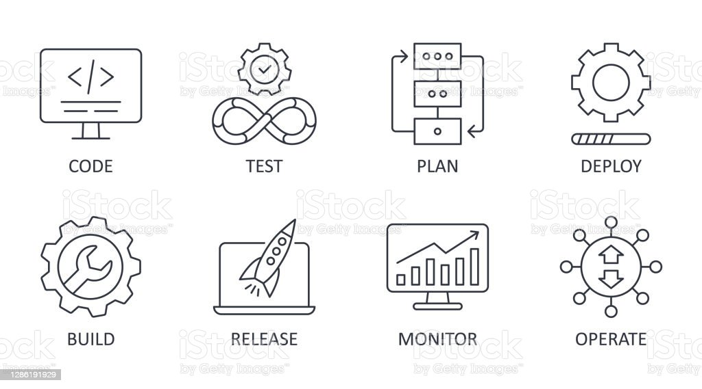

Languages
-
C/C++
-
JAVA
-
PYTHON
-
SQL/MySQL
-
HTML/CSS/JAVAscript
-
SWIFT New
-
REACT

Programming
Software engineers shall commit themselves to making the analysis, specification, design, development, testing and maintenance of software a beneficial and respected profession.In accordance with their commitment to the health, safety and welfare of the public, software engineers shall adhere to the following Eight Principles:
1.-Software engineers shall act consistently with the public interest.
2.-Software engineers shall act in a manner that is in the best interests of their client and employer consistent with the public interest.
3.-Software engineers shall ensure that their products and related modifications meet the highest professional standards possible.
4.-Software engineers shall maintain integrity and independence in their professional judgment.
5.-Software engineering managers and leaders shall subscribe to and promote an ethical approach to the management of software development and maintenance.
6.-Software engineers shall advance the integrity and reputation of the profession consistent with the public interest.
7.-Software engineers shall be fair to and supportive of their colleagues.
8.-Software engineers shall participate in lifelong learning regarding the practice of their profession and shall promote an ethical approach to the practice of the profession.
“Code as if the next guy to maintain your code is a homicidal maniac who knows where you live”
Kathy Sierra

Full Stack
The backend developer has a vital role in web applications' performance. In addition to handling the business logic, they also ensure the frontend's development work is integrated and well delivered according to the project's goals and vision.
FRONT-END
BACK-END
Being a front-end developer is good, being a back-end developer is equaly as important. Howerver, having some knowledge in both sides is even better.
“The biggest issue on software teams is making sure everyone understands what everyone else is doing”
Martin Fowler.